RÉPUBLIQUE TUNISIENNE
MINISTÈRE DE L’EMPLOI ET DE LA FORMATION PROFESSIONNELLE
Institut des Sciences Privées Internationales (ISPRI)
Sujet : EcoDrive — Site web de showroom et de catalogue de véhicules électriques en Tunisie
Réalisé par :
| Encadrant | Monsieur Nidhal TARHOUNI |
| Réalisé au sein de | Institut ISPRI — Projet personnel à but pédagogique |
| Diplôme | BTS Informatique de Gestion |
Session (année universitaire) : Octobre 2024 / Octobre 2026
| N° | Libellé |
|---|---|
| Figure 1 | L’organigramme simplifié de l’ISPRI |
| Figure 2 | La carte conceptuelle d’EcoDrive |
| Figure 3 | Le diagramme de cas d’utilisation général |
| Figure 4 | Le diagramme de cas d’utilisation du client |
| Figure 5 | Le diagramme de cas d’utilisation de l’administrateur |
| Figure 6 | L’architecture 3-tiers d’EcoDrive |
| Figure 7 | Le diagramme de déploiement d’EcoDrive |
| Figure 8 | Le modèle MVC appliqué à EcoDrive |
| Figure 9 | Le diagramme de classes |
| Figure 10 | Le diagramme de cas d’utilisation du module d’authentification |
| Figure 11 | Le diagramme de séquence d’authentification |
| Figure 12 | L’interface de connexion |
| Figure 13 | L’interface d’inscription |
| Figure 14 | Le cas d’utilisation « Gérer les utilisateurs » |
| Figure 15 | Le diagramme de séquence « Ajouter un utilisateur » |
| Figure 16 | L’interface de la liste des utilisateurs (admin) |
| Figure 17 | Le cas d’utilisation du catalogue |
| Figure 18 | Le diagramme de séquence « Rechercher et filtrer » |
| Figure 19 | L’interface du catalogue |
| Figure 20 | L’interface d’une fiche technique voiture |
| Figure 21 | Le cas d’utilisation « Gérer les voitures » |
| Figure 22 | L’interface d’ajout d’une voiture (admin) |
| Figure 23 | Le cas d’utilisation « Gérer les bornes » |
| Figure 24 | L’interface de la liste des bornes |
| Figure 25 | L’interface d’une fiche borne |
| Figure 26 | Le diagramme d’états-transitions d’une réservation |
| Figure 27 | Le diagramme de séquence « Réserver un essai » |
| Figure 28 | L’interface de réservation d’un essai |
| Figure 29 | L’interface de la liste des essais du client |
| Figure 30 | Le cas d’utilisation « Contact et newsletter » |
| Figure 31 | L’interface du formulaire de contact |
| Figure 32 | L’interface du tableau de bord d’administration |
| Figure 33 | L’interface des graphiques statistiques (admin) |
| Figure 34 | L’interface du journal d’audit |
| N° | Libellé |
|---|---|
| Tableau 1 | Les contrastes entre notre solution et les solutions existantes |
| Tableau 2 | Les besoins fonctionnels par module |
| Tableau 3 | Les caractéristiques techniques de la machine de travail |
| Tableau 4 | L’environnement logiciel utilisé |
| Tableau 5 | La description des classes principales (extrait du modèle relationnel) |
| Tableau 6 | La description textuelle du cas d’utilisation « S’authentifier » |
| Tableau 7 | La description textuelle du cas d’utilisation « Créer un compte » |
| Tableau 8 | La description textuelle « Créer un utilisateur » (admin) |
| Tableau 9 | La description textuelle « Modifier profil » |
| Tableau 10 | La description textuelle « Consulter le catalogue » |
| Tableau 11 | La description textuelle « Ajouter une voiture » (admin) |
| Tableau 12 | La description textuelle « Ajouter une borne » (admin) |
| Tableau 13 | La description textuelle « Réserver un essai » |
| Tableau 14 | La description textuelle « Envoyer un message » |
| Tableau 15 | La description textuelle « Consulter le tableau de bord » (admin) |
C’est avec un immense plaisir que je remercie l’ensemble des personnes qui m’ont soutenu et aidé, de loin ou de près, à la réalisation de ce travail qui vient couronner l’aboutissement de plus de deux années de travail intense.
Ma première pensée est pour ma famille, foyer d’encouragement et d’amour tout au long de mon parcours académique. Merci du fond du cœur. Mon père est une source d’inspiration et de motivation sans fin par ses conseils et son encadrement ; il me guide inlassablement vers l’excellence. Je remercie ma mère pour sa foi en moi ; elle m’a toujours soutenu dans mes prises de décision et mes idées de projet. Qu’il me soit aussi permis de remercier mon frère et ma sœur pour leurs soutiens, leurs encouragements et leurs généreux conseils.
Je remercie sincèrement Monsieur Nidhal Tarhouni, mon encadrant, pour sa disponibilité, ses précieux conseils et le temps qu’il a bien voulu me consacrer tout au long de ce projet. Grâce à sa confiance j’ai pu m’accomplir pleinement dans mes missions et mener à bien ce travail.
Je remercie également tous les enseignants et les intervenants de l’ISPRI qui ont su me transmettre leurs savoirs. Certains m’ont permis de me passionner pour des sujets qui m’intéressaient peu, d’autres m’ont ouvert des horizons que je n’imaginais même pas. Enfin, une pensée particulière à tous mes collègues pour leur esprit d’équipe et leur soutien moral tout au long de ma formation.
L’industrie automobile mondiale vit une transition majeure : la mobilité électrique s’impose progressivement comme une alternative crédible face aux véhicules thermiques. De nombreux pays, dont la Tunisie, encouragent l’adoption des véhicules électriques (VE) à travers des incitations fiscales et le développement des infrastructures de recharge. Le marché tunisien voit ainsi émerger une demande croissante d’informations fiables, de catalogue produits à jour et de services associés (essais, installation de bornes de recharge…).
Cependant, la plupart des concessions automobiles ne disposent pas d’une vitrine web moderne, complète et intégrée : les informations sont souvent éparpillées entre les réseaux sociaux et les sites institutionnels, les fiches techniques sont incomplètes et il est rarement possible de réserver en ligne un essai de véhicule ou de commander une borne de recharge.
C’est dans ce cadre que s’inscrit le présent projet de fin d’études intitulé « EcoDrive — Site web de showroom et de catalogue de véhicules électriques en Tunisie ». Il s’agit d’un logiciel personnel conçu à but pédagogique, qui vise à couvrir l’ensemble du parcours client d’un concessionnaire de véhicules électriques : présentation du showroom, catalogue détaillé de 14 véhicules électriques, fiches produits des bornes de recharge, réservation d’essais en ligne, gestion de comptes utilisateurs et un panneau d’administration complet.
Ce document retrace les différentes étapes que nous avons suivies pour mener à bien ce projet, du besoin jusqu’à la mise en service de l’application. Pour rester simple et structuré, nous avons adopté le cycle de vie en cascade, qui consiste à réaliser les étapes du projet l’une après l’autre. Ce rapport est constitué de six chapitres :
Ce projet s’inscrit dans le cadre du projet de fin d’étude en vue de l’obtention du Diplôme National de BTS en Informatique de Gestion, assuré par l’Institut des Sciences Privées Internationales (ISPRI). Il consiste en la réalisation d’un site web de showroom et de catalogue de véhicules électriques, développé en PHP, MySQL et JavaScript vanilla, sans framework, dans une démarche d’apprentissage personnel et d’auto-formation.
L’ISPRI — Institut des Sciences Privées International — est un institut de formation professionnelle homologué, spécialisé dans le développement des compétences des étudiants, des employés et des cadres. Il dispense des formations dans le domaine de l’informatique et de la gestion, dont le BTS en Informatique de Gestion, diplôme national permettant d’acquérir les compétences nécessaires au développement et à l’administration de systèmes d’information, à l’analyse et à la conception de bases de données, ainsi qu’à la programmation web et applicative. L’institut est localisé à Tunis.
L’institut propose des programmes accélérés, pratiques et adaptés aux besoins du marché du travail, notamment :
L’adage de l’institut : « Ispri Formation, votre évolution, notre mission ».
Le tableau suivant présente un organigramme simplifié de l’institut, sous forme de structure hiérarchique : la direction générale, les départements et les filières qui en dépendent.
| Niveau | Entité | Composition / Rôle |
|---|---|---|
| 1 | Direction de l’ISPRI | Direction générale de l’institut |
| 2 | Coordination pédagogique | Organisation et suivi des formations |
| 2 | Corps formateur (certifiés) | Enseignants et formateurs qualifiés |
| 2 | Administration & Support (RH, administratif) | Gestion administrative et ressources humaines |
| 3 | Filières BTS & Informatique | Formation diplômante (BTS en Informatique de Gestion) |
| 3 | Langues, Bureautique, Management | Formations complémentaires |
[Figure 1 : L’organigramme simplifié de l’ISPRI.]
(À remplacer par l’organigramme officiel de l’institut si disponible.)
Le marché des véhicules électriques en Tunisie est en pleine croissance. Les concessionnaires et les importateurs présentent leurs modèles via des sites vitrines ou des pages sur les réseaux sociaux, tandis que les places de marché généralistes (petites annonces) offrent une visibilité sans réel service associé. Dans ce contexte, nous constatons que les solutions existantes présentent plusieurs lacunes :
Nous pouvons citer quelques exemples de solutions existantes :
Le tableau ci-dessous présente une comparaison rapide des fonctionnalités existantes.
| Fonctionnalité | Sites concessionnaires | Places de marché | Solutions dédiées VE | Notre solution |
|---|---|---|---|---|
| Catalogue détaillé | Partiel | Oui | Variable | Oui |
| Fiches techniques normalisées | Non | Non | Variable | Oui |
| Réservation d’essai en ligne | Non | Non | Rarement | Oui |
| Espace client | Non | Oui | Variable | Oui |
| Panneau d’administration | Non | Non | Variable | Oui |
| Statistiques et export | Non | Non | Non | Oui |
Tableau 1 : Les contrastes entre notre solution et les solutions existantes.
La solution retenue est le développement d’une application web complète et autonome, baptisée EcoDrive, qui couvre :
La figure suivante présente la carte conceptuelle du projet, qui schématise l’idée globale d’EcoDrive et les liens entre ses différents modules.
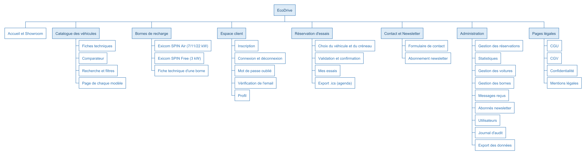
Pour conduire ce projet de façon simple et organisée, nous avons adopté le cycle de vie en cascade comme méthodologie de travail, et UML (Unified Modeling Language) comme langage de modélisation.
Le modèle en cascade (ou « waterfall ») est une méthode de conduite de projet séquentielle : chaque phase doit être terminée avant de passer à la suivante. Ce modèle est simple à comprendre et très utilisé pour les projets pédagogiques et les projets dont les besoins sont bien définis dès le départ.
Les phases du modèle en cascade sont :
Le schéma suivant illustre le déroulement en cascade de notre projet.
Analyse des besoins → Conception → Réalisation → Tests → MaintenanceCette approche nous a permis de progresser étape par étape, d’obtenir un document de référence à chaque phase et de mieux maîtriser chaque partie du projet avant de passer à la suivante.
Nous avons choisi ce modèle pour plusieurs raisons :
Les étapes correspondantes dans notre rapport sont : l’analyse (chapitre 2), la conception (chapitre 3), la réalisation (chapitre 4), les tests (chapitre 5) et la maintenance / le déploiement (chapitre 6).
Pour la phase de conception, nous avons utilisé UML afin de représenter la structure statique (diagrammes de classes, diagrammes de cas d’utilisation) et la vue dynamique (diagrammes de séquence, diagrammes d’états-transitions) du système.
Dans ce chapitre, nous avons présenté le cadre général du projet, l’organisme de formation, l’étude de l’existant ainsi que la méthodologie de travail adoptée. Le chapitre suivant sera consacré à l’analyse des besoins.
Ce chapitre est consacré, dans le cadre de la première phase « Analyse des besoins » du cycle en cascade, à l’étude des besoins fonctionnels et non fonctionnels du système, à l’identification des acteurs et à l’élaboration des diagrammes de cas d’utilisation.
| Module | Besoin |
|---|---|
| Showroom | Afficher une sélection de véhicules « mis en avant » sur la page d’accueil |
| Catalogue | Lister les véhicules avec filtres (recherche, marque, prix, année) et tri |
| Fiches techniques | Afficher motorisation, batterie, autonomie, recharge, dimensions |
| Bornes | Présenter les bornes de recharge Exicom avec fiches produits |
| Réservation | Réserver un créneau d’essai en ligne avec règles de validation |
| Espace client | Inscription, connexion, profil, historique des essais |
| Admin | Gérer les voitures, les bornes, les réservations, les messages, la newsletter, les utilisateurs |
| Audit | Journaliser chaque action d’administration |
| Export | Exporter les données en CSV et réaliser une sauvegarde SQL |
| SEO | Sitemap dynamique, robots.txt, balises meta, JSON-LD |
Tableau 2 : Les besoins fonctionnels par module.
private/logs/, sauvegarde de secours des emails ;.env).C’est l’utilisateur non connecté. Il peut consulter le showroom, le catalogue, les fiches techniques, les bornes, les pages statiques (contact, mentions légales, CGV, CGU, confidentialité), s’inscrire et s’authentifier.
C’est l’utilisateur authentifié. En plus des droits du visiteur, il peut réserver un essai, consulter son profil, modifier ses informations personnelles et consulter l’historique de ses essais.
C’est le gestionnaire du site. Il dispose de tous les droits du client et, en plus, il gère les voitures (CRUD + mise en avant), les bornes (CRUD), les réservations (confirmation, annulation), les messages de contact, la newsletter, les utilisateurs (rôles, suppression) et consulte les statistiques et le journal d’audit.
Le diagramme de cas d’utilisation est le diagramme UML qui représente les fonctionnalités du système vues par les acteurs. Il montre qui fait quoi dans l’application, sans entrer dans le détail technique. Nous présentons ici les trois diagrammes de cas d’utilisation principaux du système :
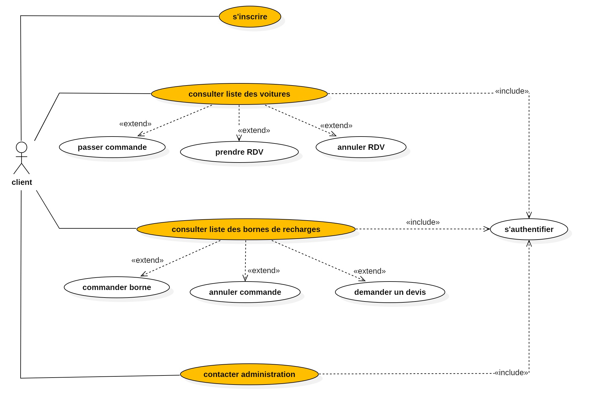

Dans ce chapitre, nous avons effectué l’analyse des besoins qui nous a permis de comprendre les fonctionnalités attendues du système et d’identifier les différents acteurs (visiteur, client, administrateur) ainsi que leurs droits. Les diagrammes de cas d’utilisation résument l’ensemble des fonctionnalités que le système doit offrir. Le chapitre suivant est consacré à la conception de la solution.
Ce chapitre est consacré à la présentation des choix techniques de la solution adoptée : les langages, les outils et l’environnement de développement, ainsi que l’architecture générale du système.
PHP est un langage de script généraliste, particulièrement adapté au développement web, côté serveur. PHP 8 offre des performances accrues, un typage plus riche et des fonctions intégrées de sécurité (hachage de mots de passe, filtres de validation). Pourquoi PHP ?
php.net)
;mysqli pour la sécurité ;MySQL (via MariaDB dans XAMPP) est un système de gestion de base de données relationnelle (SGBDR). Pourquoi MySQL ?
utf8mb4 (émojis et
multilingue) ;article, section,
time, JSON-LD) ;data-validate),
gestion de la confirmation de suppression.Le choix du vanilla (sans framework) s’explique par la démarche pédagogique du projet : comprendre les mécanismes fondamentaux du web avant l’utilisation de bibliothèques.
.ics
d’un créneau de réservation ;LocalBusiness et Product.| Caractéristique | Valeur |
|---|---|
| Processeur | Intel Core i7 |
| Mémoire RAM | 8 à 16 Go |
| Stockage | SSD 512 Go |
| Système d’exploitation | Windows 10/11 |
Tableau 3 : Les caractéristiques techniques de la machine de travail.
| Logiciel | Description |
|---|---|
| XAMPP | Pile logicielle libre (Apache, MariaDB, PHP, Perl) pour serveur web local |
| Visual Studio Code | Éditeur de code open source avec autocomplétion, débogage et intégration Git |
| MySQL Workbench / phpMyAdmin | Administration graphique de la base de données |
| Git + GitHub | Gestion de versions et hébergement du dépôt
(github.com/hayderbaccouri/ecodrive) |
| Postman | Tests des API et des flux HTTP |
| Draw.io / edraw | Outils de modélisation UML |
Tableau 2 : L’environnement logiciel utilisé.
L’application est développée selon une architecture 3-tiers logique :
php/*.php) : authentification, réservation, validation,
rôles ;mysqli avec requêtes préparées.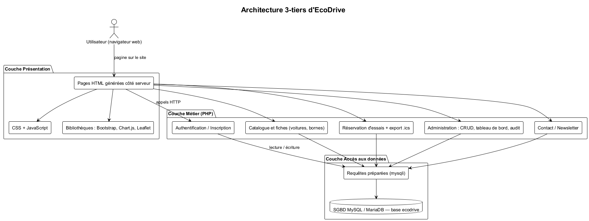
Les principaux nœuds :
.htaccess, sécurité ;mail() avec journal local de secours.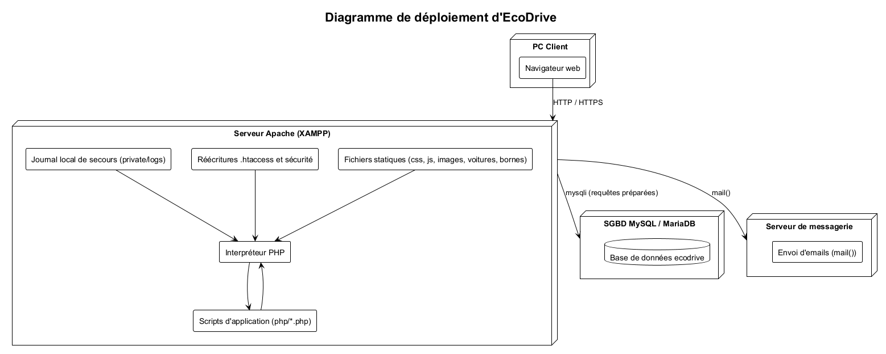
Nous avons structuré le code selon un modèle proche du MVC adapté au PHP sans framework :
base-de-donnees/ecodrive.sql, requêtes préparées,
php/car_data.php) ;php/partials/ (header,
footer, meta, jsonld) et pages HTML ;php/admin.php, php/reservation.php,
php/connexion.php, etc.).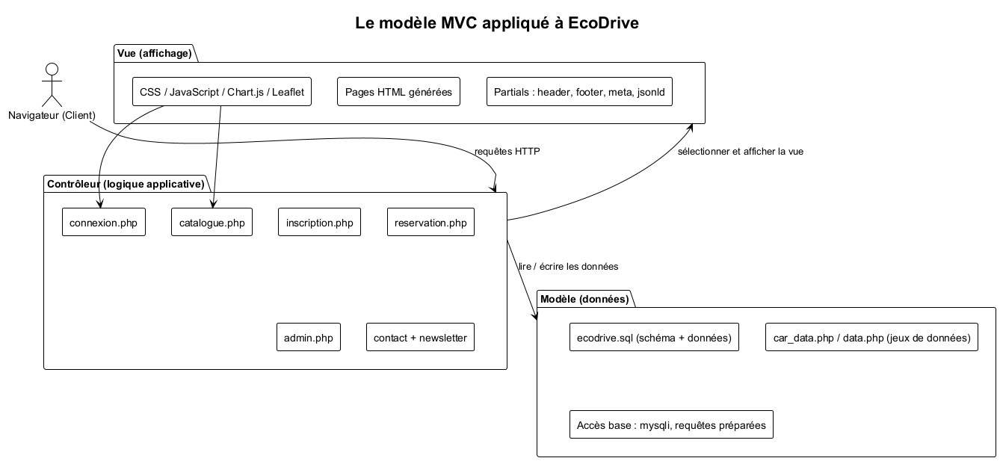
Le schéma relationnel regroupe les entités suivantes (description partielle) :
| Classe | Attributs |
|---|---|
| utilisateur | id_utilisateur, nom, email, telephone, mot_de_passe, role (client/admin), email_verified, reset_token… |
| voiture | id_voiture, marque, modele, annee, prix, description, image, battery_kwh, horsepower, range_km, is_featured… |
| borne | id_borne, nom, modele, puissance, prix, description, image, details_page… |
| reservation | id_reservation, utilisateur_id, voiture_id, date_essai, heure_debut, heure_fin, statut (pending/confirmed/cancelled), notes |
| contact_message | id, nom, email, telephone, sujet, message, created_at |
| newsletter_subscribers | id, email, subscribed_at |
| admin_audit | id, admin_id, admin_name, action, details, created_at |
| login_attempts | id, ip_address, email, attempted_at, success |
| rate_limits | id, bucket, created_at |
Tableau 3 : La description des classes principales (extrait du modèle relationnel).
La figure suivante présente le diagramme de classes du système.

Dans ce chapitre, nous avons présenté les choix techniques, l’environnement de développement et l’architecture générale du système. Il s’agit de la phase conception du cycle en cascade. Le chapitre suivant est consacré à la réalisation de l’application.
Ce chapitre correspond à la phase « Réalisation » du cycle en cascade. Il décrit le développement effectif de l’application EcoDrive, organisé en plusieurs modules :
Pour chaque module, nous suivons les étapes simples : l’analyse du besoin, la conception (diagrammes) et la réalisation (interface et code).
Chaque utilisateur doit s’authentifier via un email et un mot de passe avant d’accéder aux fonctionnalités privées. Le système vérifie les données contre la base, régénère la session à la connexion et applique un rate limiting pour limiter les tentatives.
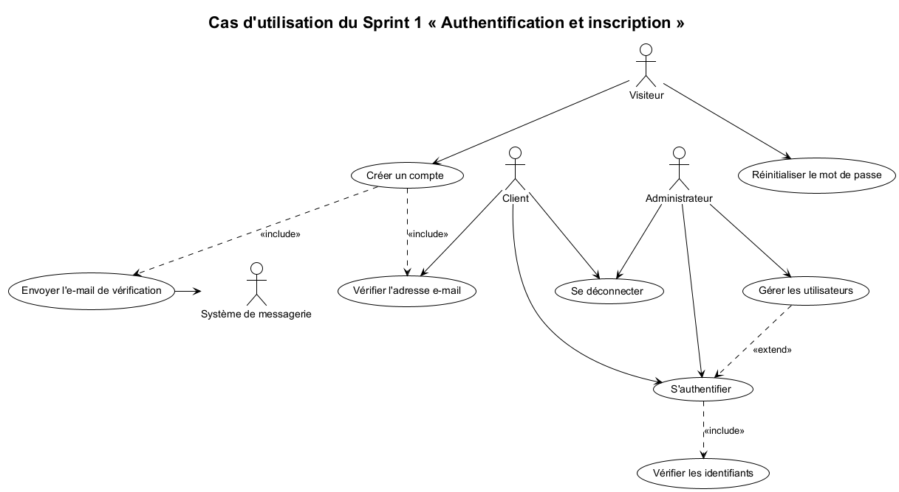
| Élément | Description |
|---|---|
| Résumé | Permet à l’utilisateur de se connecter et d’accéder aux fonctionnalités privées |
| Acteurs | Visiteur (inscrit), Client, Administrateur |
| Pré-condition | Utilisateur non authentifié |
| Post-condition | Utilisateur authentifié |
| Scénario nominal | 1. L’utilisateur demande de s’authentifier ; 2. Le système affiche le formulaire ; 3. L’utilisateur saisit email et mot de passe puis clique « Connexion » ; 4. Le système valide les données (CSRF, format) ; 5. Le système vérifie l’existence de l’utilisateur et le mot de passe (bcrypt) ; 6. Le système régénère la session et affiche l’accueil |
| Scénario d’erreur | Champs vides ; format invalide ; utilisateur introuvable ; mot de passe incorrect ; limite de tentatives atteinte (5/15 min) |
Tableau 6 : La description textuelle du cas d’utilisation « S’authentifier ».
| Élément | Description |
|---|---|
| Résumé | Permet à un visiteur de créer un compte client |
| Acteurs | Visiteur |
| Pré-condition | Visiteur non authentifié |
| Post-condition | Compte créé, email de vérification envoyé |
| Scénario nominal | 1. L’utilisateur clique sur « Inscription » ; 2. Le système affiche le formulaire ; 3. L’utilisateur saisit nom, email, téléphone et mot de passe (≥ 8 caractères) ; 4. Le système valide et vérifie l’unicité de l’email ; 5. Le système crée le compte (hash bcrypt, token de vérification 24 h) et envoie l’email ; 6. Le système affiche un message de succès |
| Scénario d’erreur | Champs vides ; mot de passe trop court ; email invalide ou déjà utilisé ; limite d’inscriptions (5/h) |
Tableau 7 : La description textuelle du cas d’utilisation « Créer un compte ».
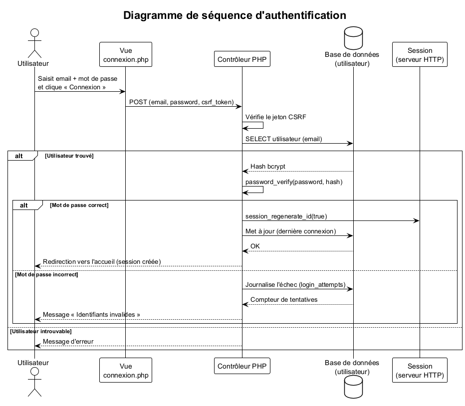
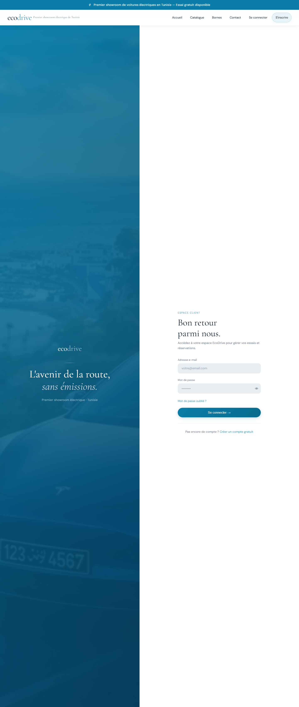
Le module d’authentification est implémenté dans
php/connexion.php, php/inscription.php,
php/mot-de-passe-oublie.php,
php/reinitialiser-mot-de-passe.php et
php/verifier-email.php, avec les fonctions de sécurité de
php/bootstrap.php (CSRF, sessions sécurisées, rate
limiting).
L’administrateur peut créer des utilisateurs, changer leur rôle
(client / administrateur) et les supprimer (après suppression de leurs
réservations). Chaque utilisateur peut modifier son profil. Toutes les
actions administratives sont tracées dans admin_audit.
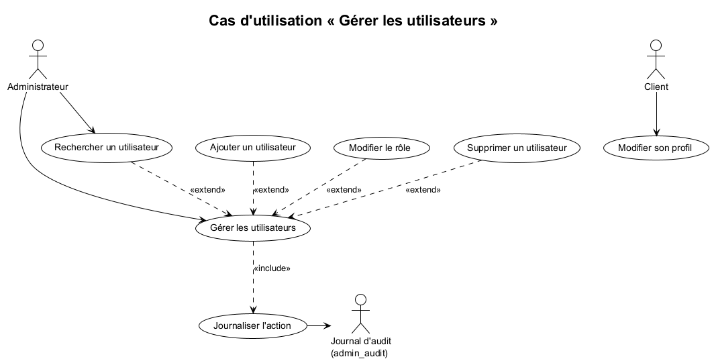
| Élément | Description |
|---|---|
| Résumé | L’administrateur ajoute un utilisateur |
| Acteurs | Administrateur |
| Pré-condition | Administrateur authentifié |
| Post-condition | Utilisateur créé et enregistré en base |
| Scénario nominal | 1. L’admin ouvre « Utilisateurs » ; 2. Le système affiche la liste et le formulaire d’ajout ; 3. L’admin renseigne les données et enregistre ; 4. Le système valide (CSRF, unicité email, mot de passe) ; 5. Le système insère l’utilisateur et journalise l’action |
| Scénario d’erreur | Données invalides ; échec d’insertion ; email existant |
Tableau 8 : La description textuelle « Créer un utilisateur » (admin).
| Élément | Description |
|---|---|
| Résumé | Permet à tout utilisateur de modifier son propre profil |
| Acteurs | Client, Administrateur |
| Pré-condition | Utilisateur authentifié |
| Post-condition | Profil mis à jour |
| Scénario nominal | 1. L’utilisateur ouvre « Profil » ; 2. Le système affiche ses informations ; 3. L’utilisateur modifie et enregistre ; 4. Le système valide et met à jour en base ; 5. Message de succès |
| Scénario d’erreur | Données invalides ; échec de mise à jour |
Tableau 6 : La description textuelle « Modifier profil ».
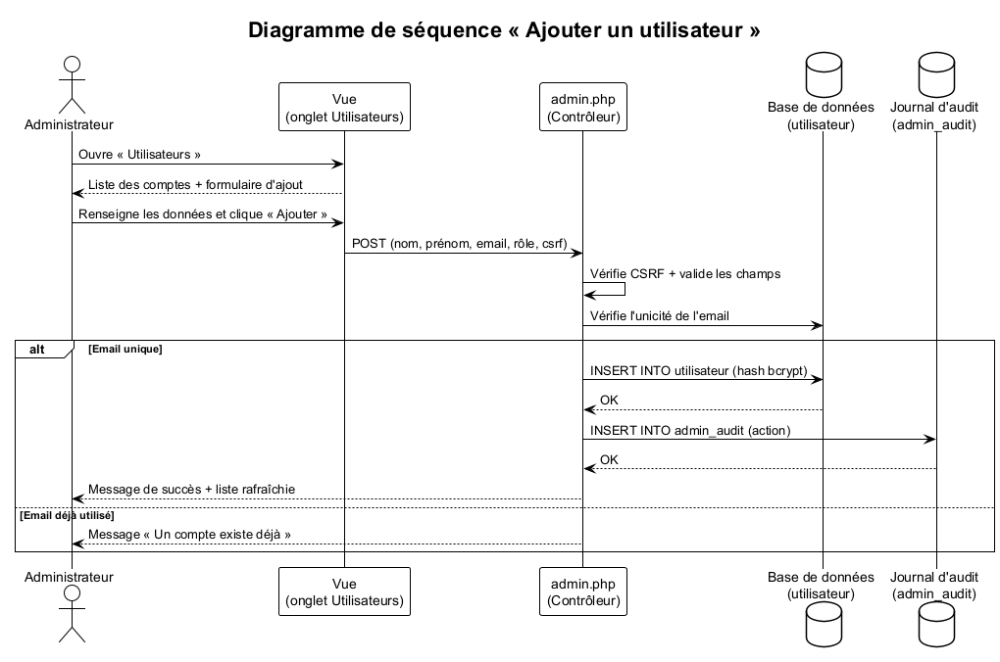
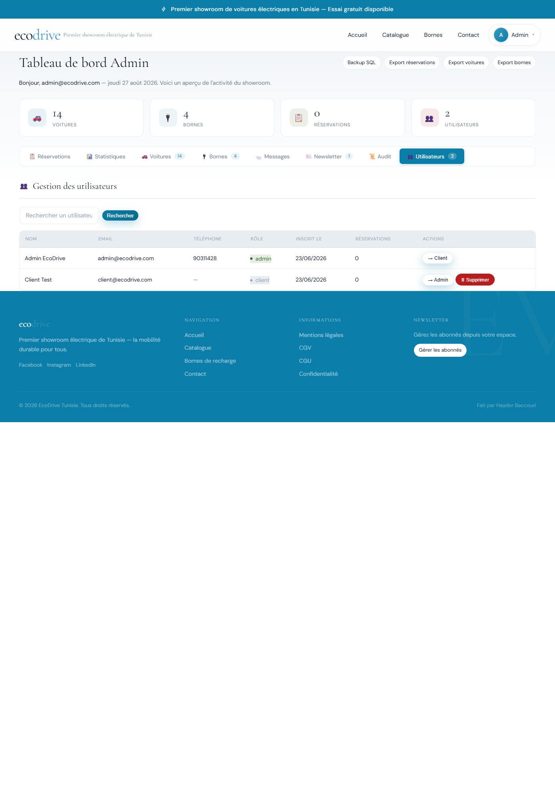
Le panneau d’administration (php/admin.php, onglet «
Utilisateurs ») permet la recherche, le changement de rôle et la
suppression des comptes, avec journalisation dans
admin_audit à chaque action.
Le visiteur consulte le catalogue des 14 véhicules électriques. Il peut rechercher par mot-clé, filtrer par marque, par tranche de prix et par année, trier (popularité, prix, année) et naviguer par pagination (9 véhicules par page). Chaque véhicule dispose d’une fiche technique dédiée.
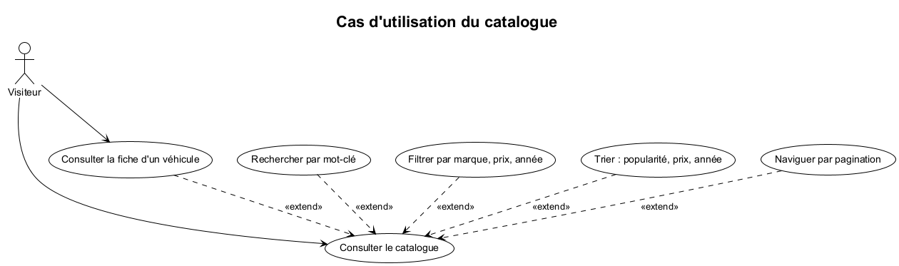
| Élément | Description |
|---|---|
| Résumé | Permet de parcourir le catalogue et de consulter une fiche véhicule |
| Acteurs | Visiteur (sans authentification) |
| Pré-condition | Aucune |
| Post-condition | Liste filtrée/triée affichée |
| Scénario nominal | 1. Le visiteur ouvre le catalogue ; 2. Le système affiche la première page (9 véhicules) ; 3. Le visiteur applique filtres/tri ; 4. Le système exécute la requête et affiche les résultats ; 5. Le visiteur clique sur un véhicule ; 6. Le système affiche la fiche technique |
| Scénario d’erreur | Aucun résultat (message dédié) ; page introuvable (404) |
Tableau 7 : La description textuelle « Consulter le catalogue ».
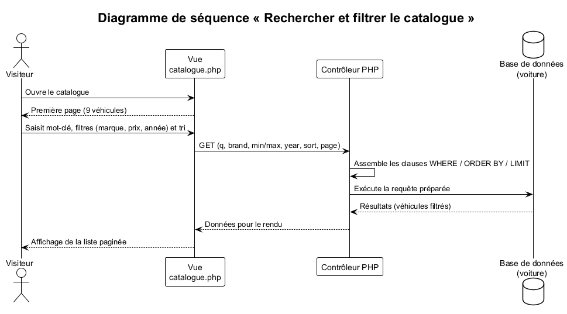
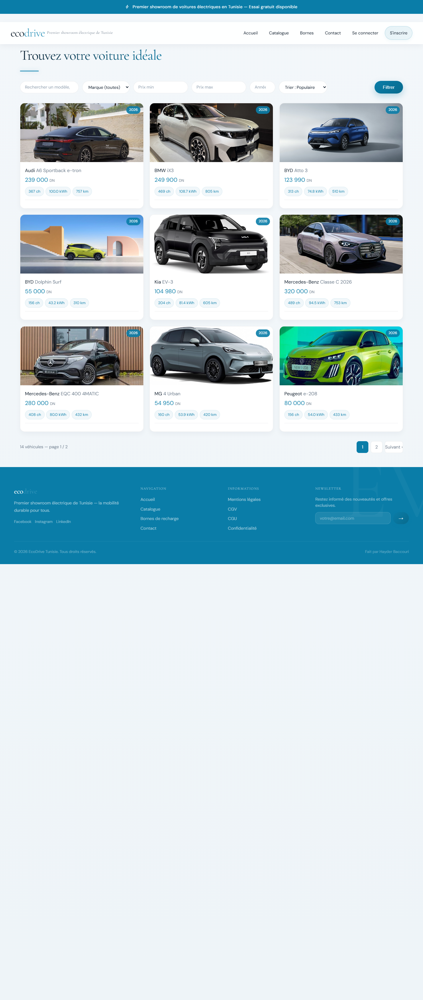
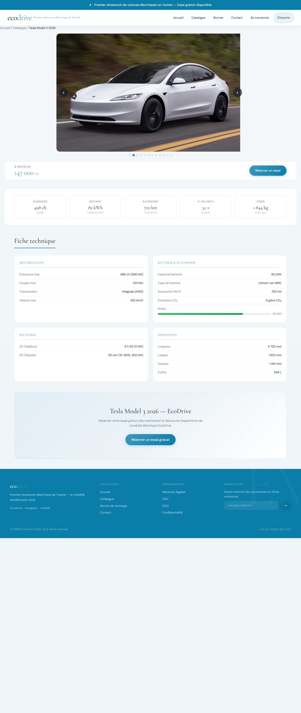
Le catalogue est implémenté dans php/catalogue.php
(filtres, tri, pagination), complété par les fiches techniques
php/car-page.php et le jeu de données
voitures/data.php (14 modèles : Audi A6 e-tron, BMW iX3,
BYD Atto 3, BYD Dolphin Surf, Kia EV-3, Mercedes Classe C et EQC, MG4,
Peugeot e-208, Porsche Taycan, Tesla Model 3 et Model S Plaid, Toyota
bZ4X, Geely EX2).
L’administrateur gère les voitures (marque, modèle,
année, prix, batterie kWh, puissance, autonomie, description, image,
page détail, mise en avant sur l’accueil) et les bornes de
recharge (nom, modèle, puissance, prix, description, image). À
chaque ajout, une page détail « stub » est
automatiquement générée (voitures/<slug>.php ou
bornes/<slug>.php). L’upload d’images est sécurisé (5
Mo max, types autorisés).
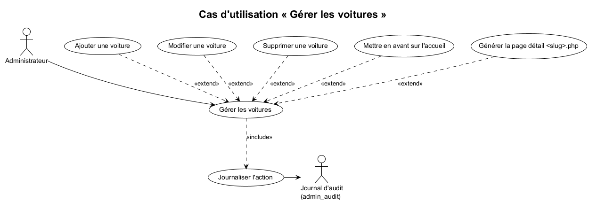
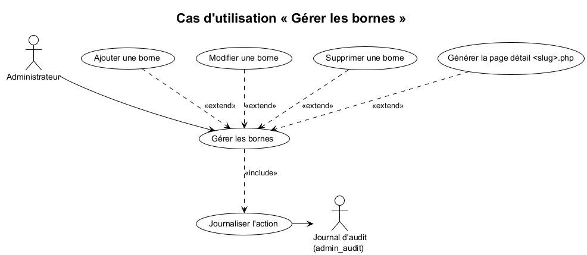
| Élément | Description |
|---|---|
| Résumé | L’administrateur ajoute une voiture au catalogue |
| Acteurs | Administrateur |
| Pré-condition | Administrateur authentifié |
| Post-condition | Voiture enregistrée, page détail générée, action journalisée |
| Scénario nominal | 1. L’admin ouvre l’onglet « Voitures » ; 2. Le système affiche le formulaire ; 3. L’admin saisit les caractéristiques, choisit une image et opte pour la mise en avant ; 4. Le système valide et insère ; 5. Le système génère la page détail et trace l’action |
| Scénario d’erreur | Données invalides ; image non conforme ; échec d’insertion |
Tableau 11 : La description textuelle « Ajouter une voiture » (admin).
| Élément | Description |
|---|---|
| Résumé | L’administrateur ajoute une borne de recharge |
| Acteurs | Administrateur |
| Pré-condition | Administrateur authentifié |
| Post-condition | Borne enregistrée et page détail générée |
| Scénario nominal | 1. L’admin ouvre l’onglet « Bornes » ; 2. Le système affiche le formulaire ; 3. L’admin saisit la fiche produit ; 4. Le système valide et insère ; 5. Le système génère la page détail et trace l’action |
| Scénario d’erreur | Données invalides ; échec d’insertion |
Tableau 8 : La description textuelle « Ajouter une borne » (admin).
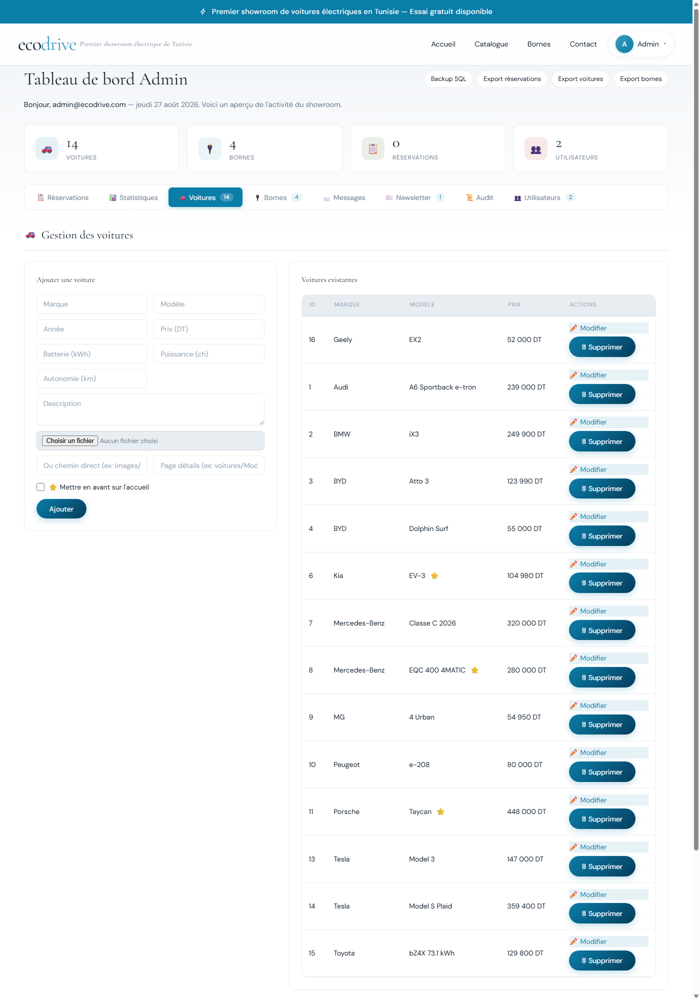
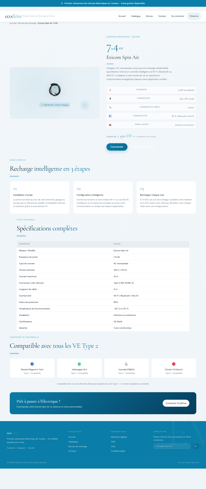
Les bornes présentées sont les modèles Exicom : Spin Air 7 kW, Spin Air 11 kW, Spin Air 22 kW et Spin Free 3 kW, avec fiche produit (puissance, connecteur Type 2, installation, prix) et boutons « Commander » / « Demander un devis ».
Le client connecté réserve un essai pour un véhicule
choisi, sur un créneau horaire d’une heure. Les règles : du lundi au
samedi, créneaux de 8 h à 17 h, pas de chevauchement avec un créneau
déjà réservé. La réservation passe par les statuts pending,
confirmed, cancelled. Le client reçoit un email et
peut ajouter le créneau à son calendrier (export .ics).
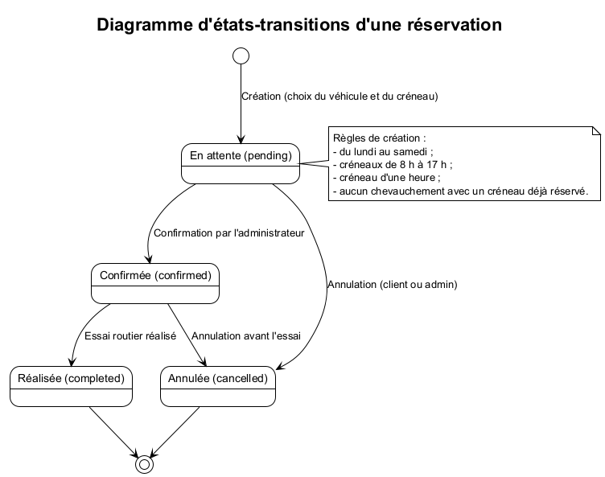
| Élément | Description |
|---|---|
| Résumé | Le client réserve un essai routier pour un véhicule |
| Acteurs | Client (connecté) |
| Pré-condition | Client authentifié |
| Post-condition | Réservation créée avec statut pending, email envoyé |
| Scénario nominal | 1. Le client choisit un véhicule puis clique « Réserver un essai » ; 2. Le système affiche le formulaire en deux étapes (véhicule, créneau) ; 3. Le client choisit date et heure ; 4. Le système vérifie les règles (jour, heure, conflit) ; 5. Le système enregistre la réservation, envoie l’email et affiche la confirmation (+ export .ics) |
| Scénario d’erreur | Créneau indisponible ; jour/heure invalide (dimanche, hors 8 h–17 h) ; client non connecté (redirection) |
Tableau 13 : La description textuelle « Réserver un essai ».
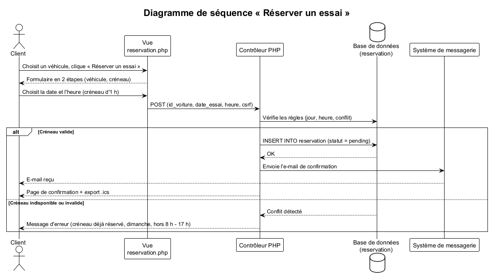
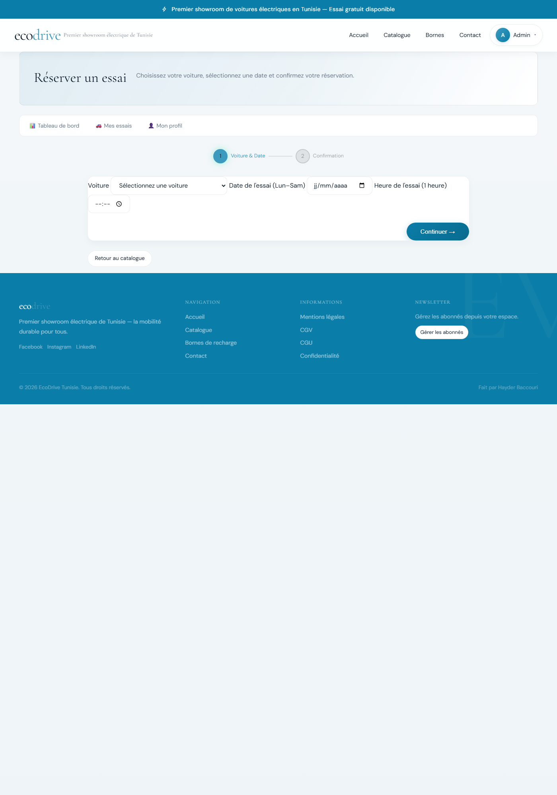
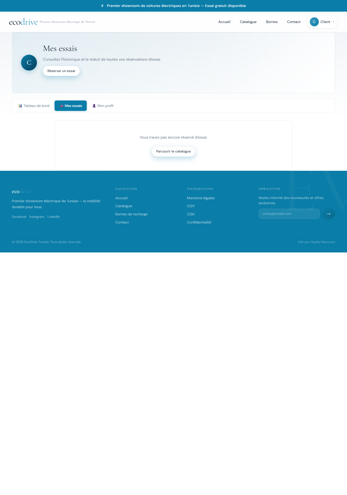
Le module est implémenté dans php/reservation.php,
php/mes-essais.php, php/tableau-de-bord.php
(KPIs et graphiques Chart.js),
php/confirmation-reservation.php et
php/export-ics.php.
Le visiteur envoie un message de contact (nom,
email, téléphone, sujet, message ≥ 10 caractères) qui est persisté dans
contact_message, notifié par email et consultable dans
l’administration. Il peut également s’abonner à la
newsletter (email unique, anti-spam 3/heure). Une carte
Leaflet/OpenStreetMap affiche la localisation du
showroom.
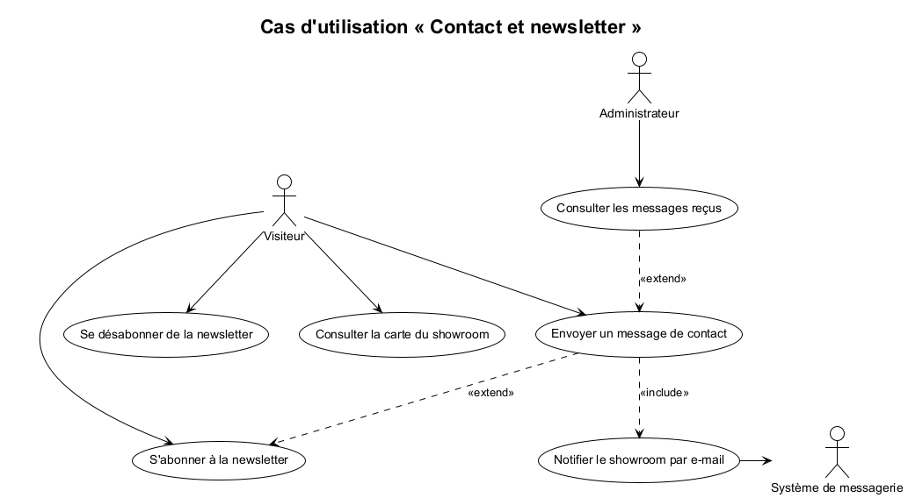
| Élément | Description |
|---|---|
| Résumé | Permet au visiteur de contacter le showroom |
| Acteurs | Visiteur |
| Pré-condition | Aucune |
| Post-condition | Message enregistré et notifié |
| Scénario nominal | 1. Le visiteur ouvre « Contact » ; 2. Le système affiche le formulaire et la carte ; 3. Le visiteur remplit et envoie ; 4. Le système valide (CSRF, format, rate limiting) ; 5. Le système persiste le message, envoie l’email et affiche la confirmation |
| Scénario d’erreur | Champs vides ; message trop court ; limite de 3 messages/10 min atteinte |
Tableau 14 : La description textuelle « Envoyer un message ».
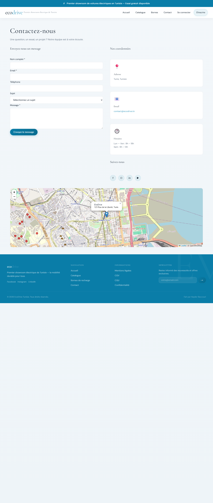
L’administrateur consulte un tableau de bord avec
des indicateurs clés : taux de confirmation des réservations, essais à
venir dans les 7 jours, chiffre d’affaires potentiel confirmé, nouveaux
clients du mois. Trois graphiques Chart.js
(réservations par mois, répartition par statut, voitures les plus
demandées) ainsi qu’une table des clients les plus actifs et les
dernières actions d’administration. Le journal d’audit
(admin_audit) trace chaque action
(ajout/modification/suppression de voiture, de borne,
confirmation/annulation de réservation, changement de rôle, suppression
d’utilisateur). Enfin, des exports permettent de
télécharger les données en CSV (réservations, voitures,
bornes, newsletter, audit) et d’effectuer une sauvegarde
SQL complète du schéma et des données.
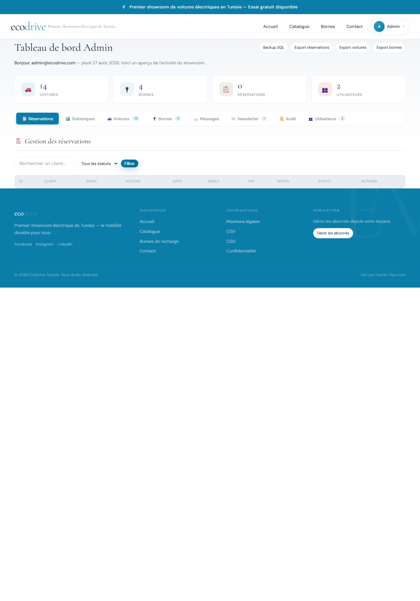
| Élément | Description |
|---|---|
| Résumé | L’administrateur consulte les statistiques du site |
| Acteurs | Administrateur |
| Pré-condition | Administrateur authentifié |
| Post-condition | Tableau de bord affiché |
| Scénario nominal | 1. L’admin ouvre l’onglet « Statistiques » ; 2. Le système calcule les KPIs et génère les graphiques ; 3. Le système affiche le tableau de bord |
| Scénario d’erreur | Page introuvable (404) |
Tableau 15 : La description textuelle « Consulter le tableau de bord » (admin).
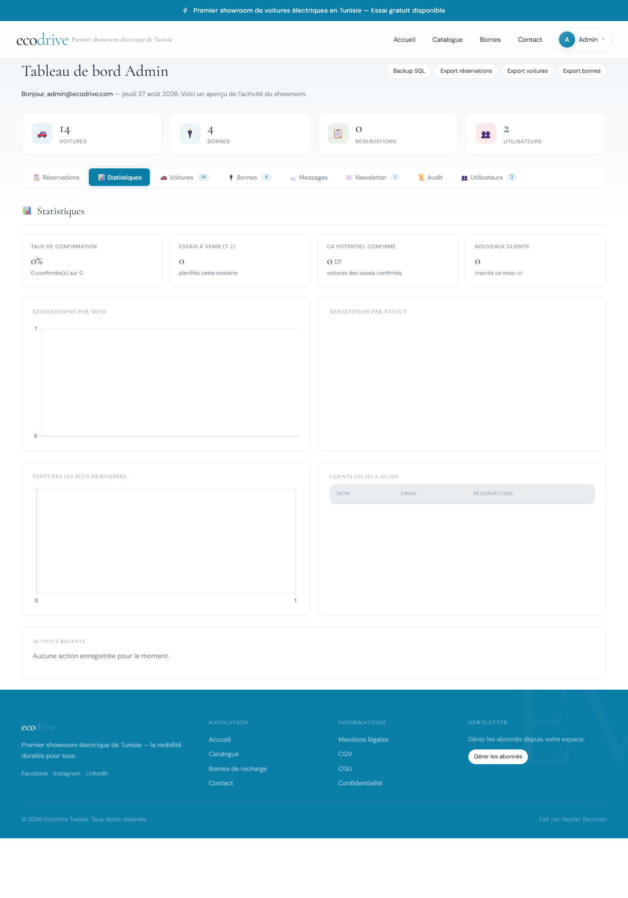
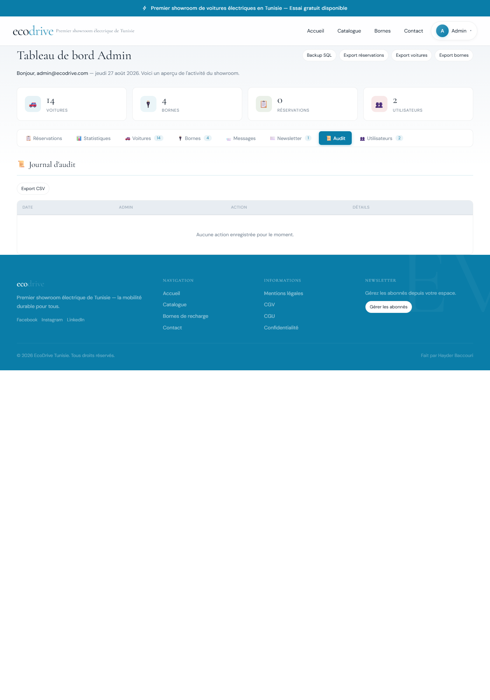
Le panneau d’administration (php/admin.php) intègre huit
onglets : Réservations, Statistiques, Voitures, Bornes, Messages,
Newsletter, Audit et Utilisateurs. Les exports sont gérés par
php/export.php (CSV avec BOM UTF-8 et sauvegarde SQL).
Dans ce chapitre, nous avons réalisé l’ensemble des modules de l’application EcoDrive : la gestion des comptes (authentification, inscription, gestion des utilisateurs), le catalogue et la gestion des voitures et des bornes, la réservation d’essais, le contact et la newsletter, ainsi que le tableau de bord d’administration avec l’audit et les exports. Le chapitre suivant est consacré aux tests de l’application.
Cette phase correspond à l’étape « Tests » du cycle en cascade. Son objectif est de vérifier que l’application fonctionne correctement, que chaque fonctionnalité répond au besoin défini lors de l’analyse et qu’aucune erreur ne perturbe le déroulement normal.
Pour tester l’application, nous avons suivi une démarche simple et progressive :
Les tests que nous avons réalisés se répartissent en trois catégories :
Le tableau suivant présente un extrait des tests fonctionnels effectués et de leurs résultats.
| Module | Action testée | Résultat attendu | Résultat obtenu |
|---|---|---|---|
| Authentification | Connexion avec un email et un mot de passe valides | Connexion réussie | Conforme |
| Authentification | Connexion avec un mot de passe erroné | Refus + annonce d’erreur | Conforme |
| Inscription | Inscription avec un email déjà utilisé | Refus avec message | Conforme |
| Utilisateurs | Ajout d’un utilisateur par l’admin | Utilisateur créé + journalisé | Conforme |
| Catalogue | Filtrage par marque | La liste se réduit aux modèles de la marque | Conforme |
| Réservation | Réservation d’un créneau déjà occupé | Refus avec message | Conforme |
| Réservation | Confirmation d’une réservation par l’admin | Statut changé + email au client | Conforme |
| Contact | Envoi d’un message avec objet vide | Refus (validation) | Conforme |
| Tableau de bord | Consultation des statistiques | Graphiques et KPIs affichés | Conforme |
| Sécurité | Injection SQL dans la recherche | Aucune donnée compromise | Conforme |
À l’issue de cette phase, tous les modules ont été testés et validés. Les erreurs détectées au cours du développement ont toutes été corrigées. L’application fonctionne conformément aux besoins exprimés lors de l’analyse et peut être déployée pour une mise en service.
Dans ce chapitre, nous avons présenté la stratégie de test adoptée ainsi que le déroulement des tests fonctionnels, de validation et de sécurité. Les tests ont confirmé le bon fonctionnement de l’application. Le chapitre suivant est consacré au déploiement et à la maintenance de l’application.
Après avoir développé et testé l’application, la dernière étape du cycle en cascade est la mise en service et le suivi du système. Ce chapitre présente l’installation de l’application, le guide d’utilisation des différents acteurs ainsi que la maintenance et les sauvegardes.
L’application EcoDrive fonctionne sur la pile XAMPP (Apache, MySQL/MariaDB, PHP). Les étapes d’installation sont les suivantes :
htdocs du serveur ;base-de-donnees/ecodrive.sql via
phpMyAdmin qui crée les tables et les données initiales
;http://localhost/ecodrive) et vérifier l’affichage des
pages.Le site s’adresse à trois types d’utilisateurs.
Le visiteur peut consulter librement le showroom, le catalogue et les fiches techniques des véhicules et des bornes, lire les pages d’informations (contact, mentions légales, conditions), remplir le formulaire de contact et s’abonner à la newsletter. Pour réserver un essai, il doit d’abord créer un compte.
Après connexion, le client peut compléter son profil, réserver un
essai pour un véhicule, suivre l’état de ses réservations dans la page «
Mes essais » et exporter son créneau au format calendrier
(.ics).
L’administrateur accède au panneau d’administration qui lui permet de gérer les voitures et les bornes, de confirmer ou d’annuler les réservations, de consulter les messages reçus et la newsletter, de gérer les utilisateurs, de suivre les statistiques et de télécharger les exports (CSV et sauvegarde SQL).
Une application doit être suivie et maintenue après sa mise en service. Les actions de maintenance que nous prévoyons sont les suivantes :
Dans ce chapitre, nous avons décrit les étapes d’installation de l’application, le guide d’utilisation pour les trois types d’utilisateurs ainsi que les actions de maintenance et de sauvegarde. Nous clôturons ce rapport par une conclusion générale et les perspectives d’amélioration.
Le présent rapport est le résultat de la réalisation de notre projet de fin d’études, développé dans le cadre de l’obtention du Diplôme National de BTS en Informatique de Gestion, encadré au sein de l’ISPRI. Lors de ce projet, nous avons pu mettre en pratique les connaissances théoriques acquises durant notre formation : analyse et conception de systèmes d’information, modélisation UML, conception de bases de données relationnelles, développement web côté serveur (PHP) et côté client (HTML, CSS, JavaScript), ainsi que les bonnes pratiques de sécurité.
Tout au long de ce projet, nous sommes arrivés à réaliser les objectifs fixés au début : développer une application web complète, EcoDrive, qui couvre le showroom, le catalogue de 14 véhicules électriques, les fiches des bornes de recharge Exicom, la réservation d’essais en ligne, l’espace client, le panneau d’administration, le tableau de bord statistique, le journal d’audit et les exports.
Nous avons tout d’abord entamé notre étude par la capture des besoins, étape cruciale pour mieux assimiler le domaine, puis par la définition des principaux intervenants (visiteur, client, administrateur). Ensuite, nous avons procédé à l’analyse et à la conception en utilisant UML comme langage de modélisation. Enfin, l’implémentation nous a permis de développer l’application en tenant compte de l’architecturation matérielle et logicielle (XAMPP, MySQL).
Bien que la solution soit fonctionnelle et sécurisée, il est difficile de prétendre avoir une solution idéale. Nous présentons ci-dessous quelques perspectives d’amélioration :
Cette application reste ouverte à toute amélioration : elle répond aux besoins communs d’un showroom de véhicules électriques en Tunisie et constitue une base solide et pédagogique pour l’apprentissage du développement web.
[1] PHP Manual — Documentation officielle du langage PHP. https://www.php.net/manual/fr/ [En ligne ; consultée en 2025-2026].
[2] MySQL Documentation — Manuel de référence. https://dev.mysql.com/doc/ [En ligne ; consultée en 2025-2026].
[3] MDN Web Docs — Ressources HTML, CSS et JavaScript. https://developer.mozilla.org/fr/ [En ligne ; consultée en 2025-2026].
[4] Chart.js Documentation. https://www.chartjs.org/docs/ [En ligne ; consultée en 2025-2026].
[5] Leaflet — Documentation officielle. https://leafletjs.com/ [En ligne ; consultée en 2025-2026].
[6] RFC 5545 — Internet Calendaring and Scheduling Core Object Specification. https://datatracker.ietf.org/doc/html/rfc5545 [En ligne ; consultée en 2025-2026].
[7] Schema.org — Vocabulaire des données structurées. https://schema.org/ [En ligne ; consultée en 2025-2026].
[8] XAMPP — Documentation et téléchargement. https://www.apachefriends.org/ [En ligne ; consultée en 2025-2026].
[9] OpenClassrooms — Cours de développement web (PHP/MySQL). https://openclassrooms.com/ [En ligne ; consultée en 2025-2026].
[10] Wikipedia — « Cycle de vie en cascade (développement) », « Modèle-vue-contrôleur ». https://fr.wikipedia.org/ [En ligne ; consultée en 2025-2026].
[11] LinkedIn — « Institut des Sciences Privées International (ISPRI) », présentation officielle de l’institut. https://www.linkedin.com/company/institut-des-sciences-priv%C3%A9es-international-ispri/ [En ligne ; consultée en 2025-2026].
Le présent projet consiste à concevoir et réaliser une application web de showroom et de catalogue de véhicules électriques en Tunisie, baptisée EcoDrive. L’application offre un catalogue de 14 véhicules électriques avec fiches techniques, la présentation de bornes de recharge Exicom, la réservation d’essais en ligne, un espace client, un panneau d’administration complet (gestion des voitures, bornes, réservations, messages, newsletter, utilisateurs), un tableau de bord statistique, un journal d’audit et des exports CSV. Le projet est développé avec PHP 8, MySQL (MariaDB), HTML, CSS et JavaScript vanilla, sous la pile XAMPP, en adoptant le cycle de vie en cascade comme méthodologie de projet et la modélisation UML.
Mots clés : Véhicule électrique, Showroom, Catalogue, PHP, MySQL, Réservation, Modèle en cascade, Sécurité web, Tunisie.
This project consists of designing and building a web application — a showroom and catalog of electric vehicles in Tunisia, named EcoDrive. The application offers a catalog of 14 electric vehicles with technical sheets, Exicom charging stations products, online test-drive booking, a customer area, a complete administration panel (management of cars, charging stations, bookings, messages, newsletter, users), a statistics dashboard, an audit log and CSV exports. The project is developed with PHP 8, MySQL (MariaDB), HTML, CSS and vanilla JavaScript, on the XAMPP stack, adopting the waterfall (cascade) development lifecycle and UML modeling.
Keywords : Electric vehicle, Showroom, Catalogue, PHP, MySQL, Booking, Waterfall model, Web security, Tunisia.
Rapport rédigé par Hayder Baccouri — Session Octobre 2024/2026 — ISPRI.